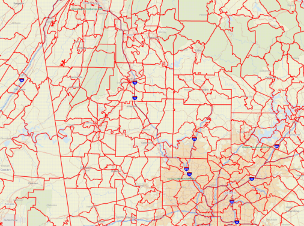
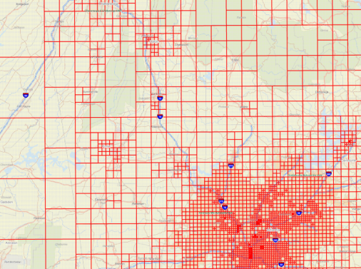

Introduction
This website provides the open-source package to create gradual rastercells. An early description of this methodology was published as a conference paper at the Annual Meeting of the Transportation Research Board:
Moeckel, R., Donnelly, R. (2014) Gradual Rasterization: Redefining the spatial resolution in transport modeling. In: Proceedings of the 93rd Annual Meeting of the Transportation Research Board (TRB). Washington, D.C. January 12-16, 2014. [Download]
 
A largely revised version is currently under review for publication in Environment and Planning B.
Contents
The deliverable that can be downloaded at the top of this page contains a compiled executable called rasterizeI75.exe (for PC only). Three subdirectories are included:
- /code/ In this directory, you find the Fortran source code. It has been compiled with Intel(R) Visual Fortran Composer XE 2013 SP1 to create the executable (rasterizeI75.exe). This code is not needed to run the model, but has been provided to enable programmers to understand every step of the model.
- /data/ This directory has all input data that is read by the program (rasterizeI75.exe). The program also writes additional files to this directory while running.
- /shp/ This directory provides a shapefile of zones in the Geogia study area.
After unzipping the executable and the the two directories /data and /shp (unzipping the directory /code is optional), open a command prompt window, navigate to the directory where these files were saved and open rasterizeI75.exe. The model will run through a series of steps to create a raster zone system and to disaggregate auto and truck flows of the Georgia Statewide Transportation Model from model zones to raster cells.
Modeling steps
The modeling steps are listed below. Note that the model takes a fairly long time to run initially while it creates intermediate output files (7 hours on a 3 GHz processor). Several of those files are greater than 100 MB, and therefore, could not be uploaded to github.
After the model completed these steps once, selected 'if statements' in the code can be set from .true. to .false. This allows skipping complex data processing and reading intermediate files instead, reducing the runtime substantially in subsequent model runs (to ca. 20 min on a 3 GHz processor, compiled in file rasterizeI75_quick.exe). In this quick version, steps A.1 and B.3 were turned off. The program rasterizeI75_quick.exe only runs after the program rasterizeI75.exe has been executed at least once.
| Step | Description | Possible to skip* | |
|---|---|---|---|
| A | Create gradual raster cells | Yes | rasterizeI75.for: Line 25 |
| A.1 | Create finest raster cell system (250 x 250 meters) | Yes | rasterizeI75.for: Line 207 |
| A.2 | Allocate socio-economic data proportionally to raster cells | No | rasterizeI75.for: Line 285 |
| A.3 | Start with single raster cell that covers the entire study area and successively split into four smaller zones until an exogenously given threshold value is reached for every raster cell | No | rasterizeI75.for: Line 392 |
| A.4 | Write ungenerate file that can be converted into a shapefile by Arc/GIS | No | rasterizeI75.for: Line 544 |
| B | Disaggregate trips from zones to raster cells | Yes | rasterizeI75.for: Line 59 |
| B.1 | Read gradual raster cells (output of step A.3) | No | rasterizeI75.for: Line 529 |
| B.2 | Read zonal trip tables of Georgia statewide model | No | rasterizeI75data.for: Line 130 |
| B.3 | Within the Atlanta metropolitan area, disaggregate trips from Georgia statewide model zones to trips by urban model zones | Yes | rasterizeI75.for: Line 636 |
| B.4 | Disaggregate zonal trip tables to raster-cell trip tables | No | rasterizeI75.for: Line 581 |
*Step may only be skipped after the model has run once and written out intermediate files.
Authors and Contributors
The model was designed by Rick Donnelly (Parsons Brinckerhoff, Inc.) and Rolf Moeckel (formerly Parsons Brinckerhoff, now University of Maryland). The code was written by Rolf Moeckel.
Support or Contact
Having trouble getting this model to work? Please contact Rolf Moeckel at moeckel [at] umd.edu for support.